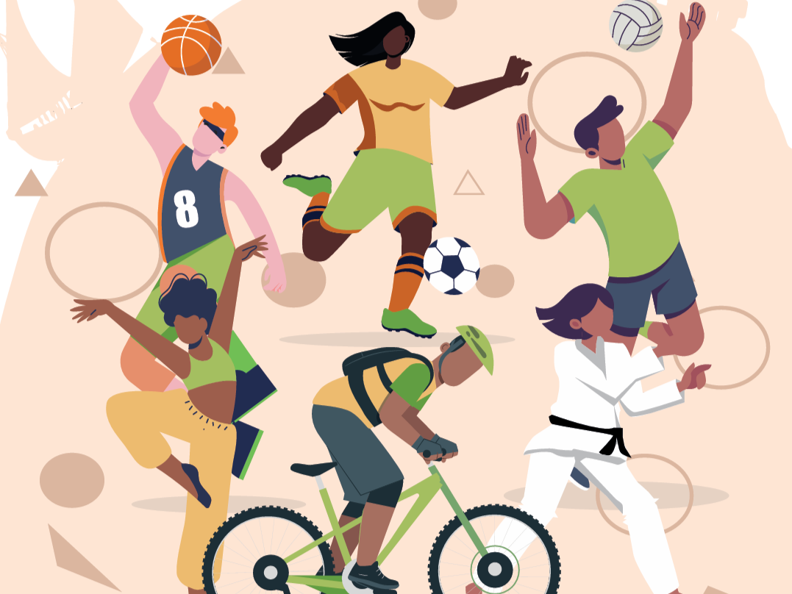

Imagem associada à notícia original.O Jardim Pescador Olhanense recebe a Primavera Desportiva, uma iniciativa municipal dedicada à promoção da atividade física e dos clubes locais.
O evento integra diferentes modalidades e instituições, aproximando a população do desporto e dos agentes desportivos do concelho.
O Andebol Clube Olhão participa neste contexto de promoção desportiva, reforçando a sua presença junto da comunidade e dos jovens.
A iniciativa contribui para dar visibilidade ao trabalho desenvolvido pelos clubes e para incentivar estilos de vida mais ativos.
Andebol Clube Olhão
Esta notícia reforça o crescimento do clube, a ligação à comunidade e o papel do andebol na formação de crianças, jovens e atletas da região.
https://www.sulinformacao.pt/2024/04/olhao-vai-por-centenas-a-mexer-no-primavera-desportiva/